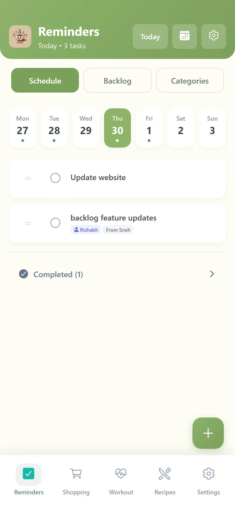
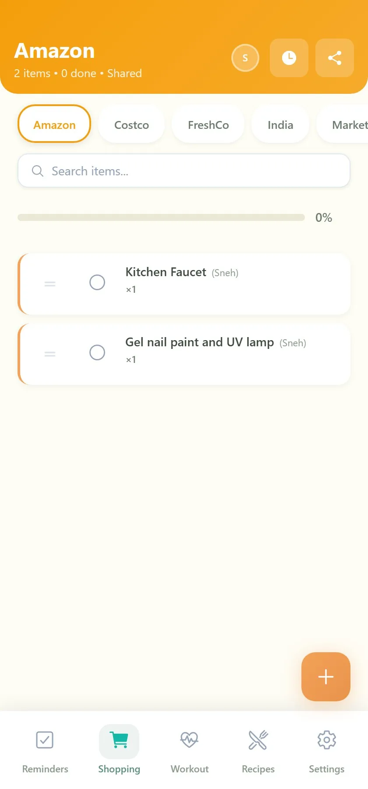
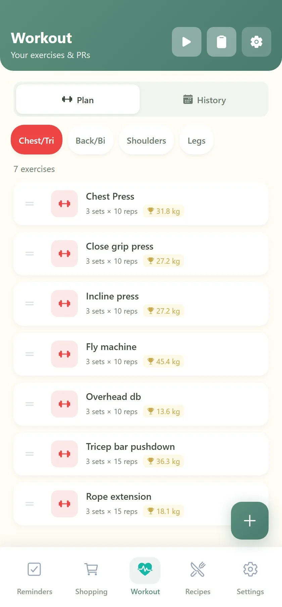
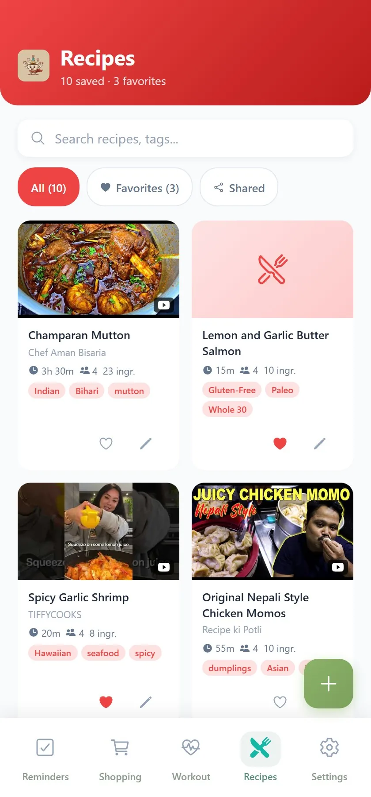

A mobile-first React app I built and run for myself: reminders that move overdue tasks to today, shopping lists shared with family in real time, a workout planner that auto-tracks personal records, and a recipe module that uses GPT-4.1 to scrape ingredients straight from a YouTube link.
Mobile-first. Works offline. Installs to home screen. The bottom nav, the safe-area handling, and the per-module color systems were all designed to feel native on iOS and Android — not like a website pretending to be an app.




Off-the-shelf todo apps don't share lists with my partner. Workout apps don't auto-detect personal records. Recipe apps make me retype every ingredient I find on YouTube. I kept stitching three or four apps together — and losing data between them.
So I started building one app that does each of those jobs well, with a single auth, a shared database, and a UI that gets out of the way.
I deliberately picked a stack I could ship with on a weekend and still maintain a year later. Everything is hosted on Vercel; there's no separate backend to babysit.
React 18 · TypeScript · Vite — typed end-to-end, tree-shaken, ~150KB gzipped. vite-plugin-pwa handles offline + install. react-router-dom with module-level route guards.
Custom CSS with mobile-first breakpoints and safe-area handling. @dnd-kit for reorderable lists. TipTap for rich-text notes. react-icons + react-colorful.
Vercel serverless functions in TypeScript. @neondatabase/serverless for Postgres with HTTP fetch (no connection pooling needed). JWT sessions hashed with bcrypt.
GitHub Models (openai/gpt-4.1-mini) via the OpenAI SDK with a custom baseURL. Strict JSON-mode prompts that return validated Recipe objects.
Bidirectional list/recipe sharing with audit history per item. Every mutation records who added or completed it; conflict-free across devices.
Module-by-module enable/disable in settings. Smart defaults so the app keeps working when modules are off. Vercel Speed Insights baked in.
The recipe handler accepts either pasted text or a YouTube URL. For URLs, it pulls the video metadata via the YouTube Data API, then sends the description (or pasted blob) to gpt-4.1-mini with a strict JSON schema. The model returns title, description, ingredients[], instructions[], prepTime, cookTime, servings, and tags[]. The frontend validates and saves it as a normal recipe.
End-to-end latency is ~3-5s for a typical 10-ingredient recipe. The same pipeline handles pasted Instagram captions, blog posts, or screenshots-as-text.
schema.sql.Create an account in 10 seconds — no email verification. Modules can be toggled in settings.
Open Almost Adult